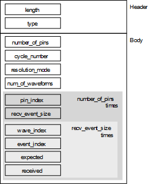

VectorFineResultAttrType
Contains the fine-grained vector results. The data type is DRLVectorResultAttr.

Field Name |
Data Type |
Description |
Comments |
|---|---|---|---|
length |
int |
Attribute length |
These fields form the attribute header. |
type |
short |
Attribute type |
|
number_of_pins |
int |
Number of pins |
|
cycle_number |
double |
Cycle number |
|
resolution_mode |
int |
Resolution mode of fine result granularity, values: "CYCL" or "EDGE" |
|
num_of_waveforms |
int |
Always 1 |
|
pin_index |
short |
Pin index |
This field and the following four fields form a block, which is repeated as often as specified in the number_of_pins field. |
recv_event_size |
char |
Receive event size |
|
wave_index |
char |
Always 0 |
These fields form a block, which is repeated as often as specified in the recv_event_size field.
|
event_index |
char |
Receive event index (0..63) |
|
| expected | char | Expected value Possible values include H, L, M, N, U, and X (see for descriptions). |
|
received |
char |
Measured value Possible values include H, L, M, N, U, and X (see for descriptions). The character is the receive edge comparison that would be true for the measured value. For example, if 1 was measured, H is logged in this field. |
Functional changes
- Introduced before SmarTest 6.3.2